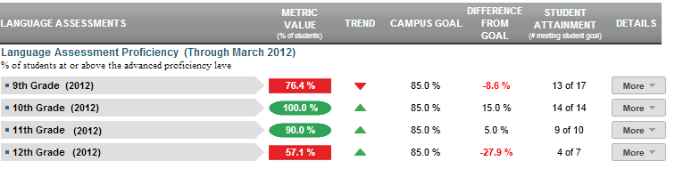

Dashboard Metrics


Language Assessment Proficiency
Background
Campus Dashboard Metrics
English Language Learners (ELL) are an important and large segment of the school aged population. The English Language Learner metrics indicates Language Assessment Proficiency scores and corresponding language levels for ELL students. Moreover, in focus groups with educators, the English Language Learner metric was repeatedly called out as necessary for classroom educators.
Primary Metric
- English Language Learner: percentage of students at each of the four Language Assessment Proficiency proficiency levels. For a definition of the proficiency levels and acronyms, see the Appendix on this page.
Related Metrics
- State Assessment Performance: percentage of students meeting the 'Met Standard' level on state assessment.
- Course Grades Below C: percentage of students with grades below C level.
- Course Grades Falling >10%: percentage of students with grades falling >10%.
- Course Grades Failing: percentage of students with failing grades.
User Interface
Dashboard Example
Figure 1 shows the Language Assessment Proficiency metric as seen on the campus dashboard.

Figure 1 Ed-Fi English Language Learner Language Assessment Metric
Status Definition
The Status column displays the percentage of students who achieve an Advanced level of proficiency by grade level (either 6th, 7th and 8th grades for middle school or 9th, 10th, 11th and 12th grades for high school). For a definition of each proficiency level, see the Appendix for this metric.
The Status indicator is determined by campus-specific thresholds (campus goals) for each grade level which are set at the district level. The Ed-Fi default threshold is 85% of students taking the test for each grade level achieving an Advanced level of proficiency.
Metric Indicator | Trend Comparisons | |||
Metric Name | Sub-metric Name | Metric Status Indicator | Trend | Campus Goal (Delta) |
Language Assessment Proficiency | 6th Grade OR 9th Grade | Red (Percentage) = if percentage of students at or above advanced proficiency level is less than campus goal Green (Percentage) if percentage of students at or above advanced proficiency level is greater than or equal to campus goal | Current year to prior year | Campus goal and the calculated percentage of students at or above advanced proficiency level |
7th Grade OR 10th Grade | Red (Percentage) = if percentage of students at or above advanced proficiency level is less than campus goal Green (Percentage) if percentage of students at or above advanced proficiency level is greater than or equal to campus goal | Current year to prior year | Campus goal and the calculated percentage of students at or above advanced proficiency level | |
8th Grade OR 11th grade | Red (Percentage) = if percentage of students at or above advanced proficiency level is less than campus goal Green (Percentage) if percentage of students at or above advanced proficiency level is greater than or equal to campus goal | Current year to prior year | Campus goal and the calculated percentage of students at or above advanced proficiency level | |
12th Grade | Red (Percentage) = if percentage of students at or above advanced proficiency level is less than campus goal Green (Percentage) if percentage of students at or above advanced proficiency level is greater than or equal to campus goal | Current year to prior year | Campus goal and the calculated percentage of students at or above advanced proficiency level | |
(a) The Value column displays the number of students at or above the advanced proficiency level out of the total number of students who took Language Assessment Proficiency.
Trend Definition
Trend Indicators: Objective is to indicate Language Assessment Proficiency | |||
| Up green | If the value for the current time frame is more than 5 percentage points higher than the prior time frame, then display a gray arrow trending upward. | |
| Unchanged | If the value for the current time frame is less than or equal to 5 percentage points higher or less than or equal to 5 percentage points lower, then display two gray arrows pointing outward indicating no direction. | |
| Down red | If the value for the current time frame is more than 5 percentage points lower than the prior time frame, then display a gray arrow trending downward. | |
The trend does not show for the first occurrence of a time frame since data is not available.
Delta Definition
Delta Indicators: Objective is to indicate Language Assessment Proficiency | |||
Metric Name | Sub-Metric Name | Campus Goal | Delta |
Language Assessment Proficiency | 6th Grade OR 9th Grade | Set campus goal | Red (Percentage) = if the calculated delta is less than the campus goal Black (Percentage ) = if the calculated delta is equal to or greater than the campus goal |
7th Grade OR 10th Grade | Set campus goal | Red (Percentage) = if the calculated delta is less than the campus goal Black (Percentage ) = if the calculated delta is equal to or greater than the campus goal | |
8th Grade OR 11th Grade | Set campus goal | Red (Percentage) = if the calculated delta is less than the campus goal Black (Percentage) = if the calculated delta is equal to or greater than the campus goal | |
12th Grade | Set campus goal | Red (Percentage) = if the calculated delta is less than the campus goal Black (Percentage) = if the calculated delta is equal to or greater than the campus goal | |
Periodicity
Best practice is to load the data for this metric at least annually prior to the beginning of the school year. Given that Language Assessment Proficiency is administered in the spring time, the data does not need to be uploaded monthly.
Recommended Load Characteristics | |
Calendar | Spring Semester |
Frequency of data load | Spring |
Latency | Yearly |
Interchange schema | Interchange-StudentAssessment.xsd |
Tooltips
The standard tool tips for the metric definition, column headers, and help functions display for this metric.
The following are tooltips specific to the metric:
- '+More' indicates drill down to view ' Student's Scores" per grade level.
 is ‘No change from the prior period'
is ‘No change from the prior period' is ‘Getting worse from the prior period’
is ‘Getting worse from the prior period’ is 'Getting better from the prior period'
is 'Getting better from the prior period'
Business Rules
The English Language Learner assessment addresses the Language Assessment Proficiency examinations.
Students in grades K-12 may take the Language Assessment Proficiency .
Data Assumptions
- The student data is loaded into Ed-Fi dashboards.
- Transfer students (late enrollment) who do not have complete transcripts should be indicated.
Computed Values
Table 6 defines how values are calculated for this metric. The result of the calculation displays in the Status column on the campus dashboard.
Metric Values | ||
Language Assessment Proficiency | Grade Level | Total number of students at or above the advanced proficiency / Total number of students taking the Language Assessment Proficiency |
Data Anomalies
Anomalies
The best practice is to footnote to address these anomalies:
- Late enrollees may have taken assessment examinations tests at their previous school
- Students that do not have social security numbers.
- Students who do not have valid scores, i.e. 0.0.
Date of Refresh
Best practice is for the date of last data refresh to appear next the metric in the following format:
- (Through April 2010)
Implementation Considerations
Student Identity
Maintaining a correct and consistent student identity is at the center of any education data system. Most systems use some sort of unique identifier. However, sometimes this identifier is entered incorrectly or sometimes different systems use different identifiers.
The UDM XML supports the interchange of multiple types of identifiers. The StudentReference is a complex type within the UDM to maintain the referential integrity of the student (that is, ensuring that the data associated with each student is accurately associated with the right student). The complex type of the student reference assists with implementing the accurate matching algorithm to identify a student by utilizing any of the individual attributes (e.g., Student Unique State ID, Student ID, Campus Local ID (with Campus ID), Name and Birth Date). For example, if the Student Unique State ID is unknown, you can find the student’s identity by their Student ID, First Name, Last Name and Birth Date.
Language Assessment Proficiency Participation Expectation
Students may take the Pre-LAS, LAS and LAS-O from K-2nd grade. The Language Assessment Proficiency examination may be taken from 2nd through 12th grades. Proper application of the metric requires the district or campus to establish clear expectations for when students should take the examination, and if a student has not taken any language assessment, at what point an intervention is in order.
Apparent Non-Participation
Assuming that the district has received and loaded timely test result data from Pre-LAS, LAS, LAS-O or Language Assessment Proficiency, students who did not participate in the test can be identified by the report comments. Table 7 defines the report comments.
Report Comment | Definition of Code |
EC = EXTENUATING CIRCUMSTANCES | Student could not be rated because of extenuating circumstances. |
- - - NO RATING / INFORMATION AVAILABLE | Student did not take Language Assessment Proficiency reading or comprehension and composite information could not be determined because the appropriate language-area proficiency ratings were not available. |
AB = NOT TESTED—ABSENT | Student was absent during the Language Assessment Proficiency reading test. |
X = NOT TESTED—ARD DECISION | Student did not participate on the basis of special education needs as determined by his or her admission, review, and dismissal (ARD) committee in conjunction with the language proficiency assessment committee (LPAC) and documented in the student's individualized education program. |
O = NOT SCORED—OTHER | Language Assessment Proficiency reading score code was coded “OTHER” due to a test administration irregularity or illness during testing. |
Incomplete Transcripts and Missing Language Assessment Proficiency Scores
Transfer students may have incomplete transcripts that do not show prior Language Assessment Proficiency participation. Timely acquisition of a transfer student’s transcript is imperative to apply this metric.
Drill Downs
The dashboards include the option to see more detail that is associated with a specific metric. Table 8 lists the drill down views that are recommended for this metric.
| Advanced Analysis | Break down of student test assessment (commended, not commended, met standard, and didn't meet standard) (Future Implementation) | |
| Historical | Graph of metric values across years. | |
| Student List | List of students who do not meet the threshold for this metric for the specified period. |
Business Rules
The Historical Graph allows the user to see historical data across multiple timeframes. As time passes, there are many bars to be displayed; therefore, the slider on the bottom allows the user to adjust the number of bars displayed as well as the time period shown. The timeframes for this metric were chosen based on educator feedback.
Appendix
Language Assessment Proficiency Assessment Components
Language Assessment Proficiency assesses the English language proficiency of K–12 ELLs in four language domains—listening, speaking, reading, and writing. English language proficiency assessments in grades K–12 are federally required to evaluate the progress that ELLs make in becoming proficient in the use of academic English. The assessment components for grades K–1 and 2–12 differ in the following ways:
- Grades K–1: Language Assessment Proficiency includes holistically rated listening, speaking, reading, and writing assessments based on ongoing classroom observations and student interactions.
- Grades 2–12: Language Assessment Proficiency includes multiple-choice reading tests, holistically rated student writing collections, and holistically rated listening and speaking assessments. The listening and speaking assessments are based on ongoing classroom observations and student interactions.
Alignment with State Curriculum
Language Assessment Proficiency assesses the English Language Proficiency Standards (ELPS), which districts are required to implement as an integral part of each foundation and enrichment subject of the Essential Knowledge and Skills (EKS) state-required curriculum.
ELPS Overview
Approved by the State Board of Education in 2007–2008, the ELPS are second language acquisition curriculum standards that support the ability of ELLs to learn the academic English they need for meaningful engagement in subject-area instruction.
Chapter 74.4 (a)(1) requires the ELPS to be published along with the EKS for each subject. Every teacher who has an ELL in class is responsible for fulfilling the requirements of the subject-area EKS and the ELPS. There are three instructional components of the ELPS that work together to accelerate the rate at which ELLs learn English and subject matter.
- cross-curricular second language acquisition essential knowledge and skills
These standards, which apply across the curriculum, represent what ELLs need to learn to become proficient in English in the context of academic instruction. The knowledge and skills are stated as student expectations and are divided into five sections—learning strategies, listening, speaking, reading, and writing.
- proficiency level descriptors (plds)
These descriptors define four stages of second language acquisition called English language proficiency levels. The four proficiency levels are beginning, intermediate, advanced, and advanced high (see Appendix A for a definition of each level). The PLDs describe how well ELLs at each proficiency level are able to understand and use English to engage in grade-appropriate academic instruction. There are separate PLDs for listening, speaking, reading, and writing.
- linguistic accommodations
Linguistic accommodations are English-language supports that help make content area instruction accessible to ELLs. The proficiency level descriptors, which describe the English that ELLs are able to understand and use at each proficiency level, guide teachers in providing appropriate linguistic supports and accommodations.
Proficiency Definitions
Beginning level of English language proficiency—Students who receive this rating are in the early stages of learning English. These students have a small vocabulary of very common words and little ability to use English in academic settings. These students often communicate using English they have memorized.
Intermediate level of English language proficiency—Students who receive this rating are able to use common, basic English in routine academic activities but need considerable English-language support to make learning understandable. Socially, these students are able to communicate simply about familiar topics and are generally able to understand conversations but may not comprehend all the details.
Advanced level of English language proficiency—Students who receive this rating are able to use academic English in classroom activities when given some English-language support. In social situations, these students can understand most of what they hear but have some difficulty with unfamiliar grammar and vocabulary.
Advanced high level of English language proficiency—Students who receive this rating are able to use academic English in classroom activities with little English-language support from others, even when learning about unfamiliar material. Students at this level have a large enough vocabulary in English to communicate clearly and fluently in most situations.
Acronyms
BICS | Basic Interpersonal Communication Skills |
CALP | Cognitive Academic Language Proficiency |
ELL | English Language Learner |
ELPS | English Language Proficiency Standards |
ESL | English as a Second Language |
PLDs | Proficiency Level Descriptors |
SE | Student Expectation |